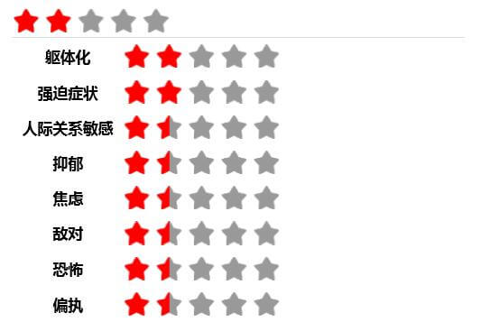

测试结果反馈
80分
您的得分为80.0分，说明您目前存在心理障碍或情绪障碍。建议您及时寻求心理医生的帮助。
【总症状指数】您的得分为0.89分，说明您目前在量表所列举的部分项目有轻微症状，但是您在这些症状上的表现并不明显，且这些不良心理症状发生的频率较低，通过您自我的调节，寻求他人的帮助，症状会逐步消失。若长期没有效果，请及时寻求心理医生的帮助，祝您生活舒心！
您的阳性项目数为58个，说明您目前存在较严重的心理障碍或情绪障碍，请您及时寻求心理医生的帮助！祝您生活舒心！
【躯体化】您的得分为0.75分，代表您在这一因子上得分低，表明您躯体症状表现不明显，建议您劳逸结合，注意关注身心健康，平衡好工作与生活的关系，调整好自己，祝您生活舒心！
【强迫症状】您的得分为1.2分，代表您在这一因子上的得分低，显示您的强迫症状不明显。建议您劳逸结合，注意关注身心健康，平衡好工作与生活的关系，调整好自己，祝您生活舒心！
【人际关系敏感】您的得分为0.78分，代表您在这一因子上的得分较低，表明您在人际关系上能应付自如，在人际交流比较自信，并对人际交往抱有积极的期待。建议您劳逸结合，注意关注身心健康，平衡好工作与生活的关系，调整好自己，祝您生活舒心！
【抑郁】您的得分为1.15分，代表您在这一因子上的得分较低，表明您抑郁程度较弱，无明显的症状，生活态度乐观积极，充满活力，心境愉快。可能暂时有一些苦闷的情绪，但是通过自我排解，寻求亲人朋友帮助后能够较好地调试过来，建议您劳逸结合，注意关注身心健康，平衡好工作与生活的关系，调整好自己，祝您生活舒心！
【焦虑】您的得分为0.0分，代表您在这一因子上的得分较低，表明您焦虑程度较弱，无明显的症状，表明您不易焦虑，在生活中表现出安定的状态。可能暂时有一些烦躁的情绪，但是通过自我排解，寻求亲人朋友帮助后能够较好地调试过来，建议您劳逸结合，注意关注身心健康，平衡好工作与生活的关系，调整好自己，祝您生活舒心！
【敌对】您的得分为1.0分，代表您在这一因子上的得分为较低，表明您在生活中容易表现出友好的思想、情感和行为。您的脾气温和，待人友好，不喜欢争论，无破坏行为。建议您劳逸结合，注意关注身心健康，平衡好工作与生活的关系，保持良好的心情，祝您生活舒心！
【恐怖】您的得分为1.0分，代表您在这一因子上的得分为较低，表明您不易产生恐怖心理，能参与到正常的交往和活动。建议您劳逸结合，注意关注身心健康，平衡好工作与生活的关系，保持良好的心情，祝您生活舒心！
【偏执】您的得分为0.0分，代表您在这一因子上的得分较低，表明您的偏执症状不明显，思维不容易走极端。建议您劳逸结合，注意关注身心健康，平衡好工作与生活的关系，保持良好的心情，祝您生活舒心！
【精神病】您的得分为0.0分，代表您在这一因子上的得分较低，表明您无明显的症状。建议您劳逸结合，注意关注身心健康，平衡好工作与生活的关系，保持良好的心情，祝您生活舒心！
【其它】您的得分为0.0分，表明您在睡眠、饮食等方面状况较好，建议您劳逸结合，注意身心健康，平衡好工作与生活的关系，保持良好的心情。(测评结果仅做参考)